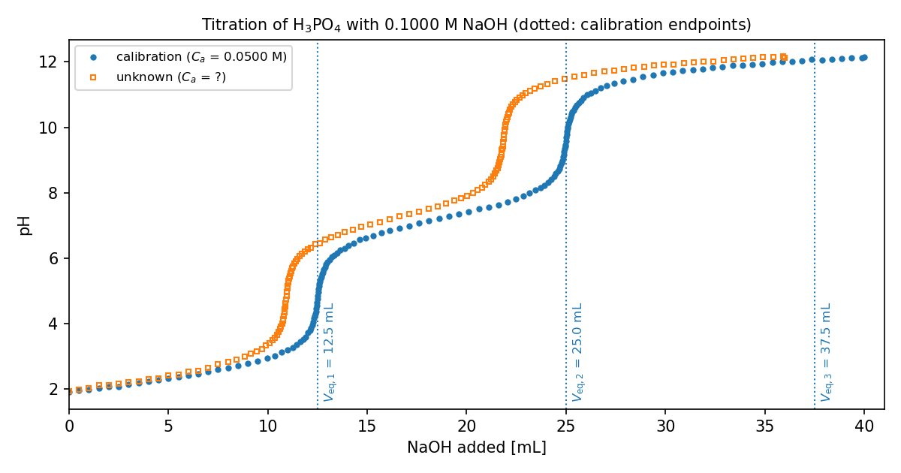

Problems: Neural Network Basics#
Get this problem set
Download everything (Topic6.3-Neural_Network_Basics_Problems.zip) — the notebook and
titration_h3po4.csv and titration_overview.png, in a folder that is ready to run as-is.
The Download badge at the top of the page will also give you the notebook on its own.
Before you start
This problem set accompanies Neural Network Basics. It is worth 100 points:
Part A — Skill Checks (30 pts) — short answers, each with a
checkthat tells you whether it is right; run it as often as you like.Part B — Visualization (35 pts) — plots plus written interpretation.
Part C — Open Ended (35 pts) — one synthesis problem.
The parts build on each other: Part A works out the syntax you need for Part B, and Part B produces the evidence you argue from in Part C. Do them in order.
Setup#
A titration adds base to an acid a little at a time and records the pH after each addition. Phosphoric acid, H\(_3\)PO\(_4\), gives up its three protons one after another, so its curve rises in steps. Each step is centered on an equivalence point, where the base added equals one more proton per acid molecule:
where \(V_0\) is the volume of acid, \(C_a\) its concentration and \(C_b\) the base concentration. Finding \(V_{\text{eq}}\) is how a titration measures \(C_a\).
data/titration_h3po4.csv holds two runs from an autotitrator, both with
\(V_0 = 25.00\) mL of acid and \(C_b = 0.1000\) M NaOH:
run == 'calibration': acid of known concentration, \(C_a = 0.0500\) M, so its equivalence volumes are 12.5, 25.0 and 37.5 mL.run == 'unknown': the same acid at a concentration nobody has written down. It is the subject of A3 and Part C.

The data are simulated, but with the habits of real equipment. An autotitrator doses in small steps where the pH changes quickly and in large steps where it does not, so the points are far from evenly spaced, and dense on the steep rises. The pH readings carry the flaws of a real glass electrode: a small calibration offset and slope error, and random noise of about 0.01 pH. The third step, at 37.5 mL, is barely visible, because the last proton of H\(_3\)PO\(_4\) is too weak to titrate cleanly in water.
A tanh unit is a smoothed step, and a titration curve is a sum of smoothed steps. That makes this curve a good place to look inside a network. As in the chapter’s section “The Output Layer Is Linear Regression”, a one-hidden-layer network is a set of features \(h_j(V)\) plus a linear regression on them:
where \(z\) is the standardized volume. Part A builds the features three ways: placed by hand, fitted by nonlinear regression, and learned by training a network.
%matplotlib inline
import numpy as np
import pandas as pd
import matplotlib.pyplot as plt
from scipy.optimize import curve_fit
from sklearn.model_selection import train_test_split
from sklearn.preprocessing import StandardScaler
from sklearn.neural_network import MLPRegressor
from sklearn.linear_model import LinearRegression
try:
plt.style.use('../settings/plot_style.mplstyle') # available inside the book
except OSError:
pass # downloaded notebook: use defaults
df = pd.read_csv('data/titration_h3po4.csv')
cal = df[df['run'] == 'calibration']
unk = df[df['run'] == 'unknown']
V0, Cb, Ca_cal = 25.00, 0.1000, 0.0500 # mL, M, M
# The calibration run, split once for Parts A and B
V_tr, V_te, y_tr, y_te = train_test_split(cal['volume_mL'].values, cal['pH'].values,
test_size=0.25, random_state=0)
scaler = StandardScaler().fit(V_tr[:, None])
z_tr = scaler.transform(V_tr[:, None]).ravel()
z_te = scaler.transform(V_te[:, None]).ravel()
def rmse(pred, true):
return np.sqrt(np.mean((np.asarray(pred) - np.asarray(true)) ** 2))
print(f"calibration: {len(cal)} points ({len(V_tr)} train, {len(V_te)} test); unknown: {len(unk)} points")
calibration: 152 points (114 train, 38 test); unknown: 146 points
Run this once. It defines the check helper used after each Part A answer. It will
not run inside the book — use the downloaded notebook.
# Run this once. It defines `check`, used after each Part A answer below.
import hashlib
_EXPECTED = {
'q1': (3, ['1aeed5b36de3', 'f604d33d2014', '060d51522e2d', '95d464cefefe', 'c72a0896c8f5', 'f0fe8961dc23', '752ebcd05c37', '152256816eb5', 'b02be3479e53', 'cf2fec62d958', 'aa877ed2890a']),
'q2': (4, ['f708b59c8e46', '1c20f8798a88', 'dc3d95f2bd3a', 'c27aaf132f4a', '746bd38059a1', '1c531f5d947b', '1604535ba7db', 'f06a5513975d', 'e1079cf5f278', 'e251575b39ee', '5679fea0aba3', 'b480d8ae0626', '3006df55faf6', '644d2e11659d', '63967ca399d2', '27b6c5f5a803', '31ef77da50e4', '4eaa3d0dee3e', '5ecc6cc295cb']),
'q3': (2, ['f419f2705b73', 'f72a4011ae45', 'b095e93883e3', 'c00f874d7e78', 'e7ebb9b4907c', 'b03f309488a7', 'aede16824fc4', 'f60bda3e5bdd', 'cc1ed3d75752']),
}
def check(qid, value):
"""Compare an answer against a stored digest. Practice only -- nothing is recorded."""
places, digests = _EXPECTED[qid]
if value is Ellipsis:
print(f"{qid}: not answered yet")
return
got = hashlib.sha256(f"{float(value):.{places}f}".encode()).hexdigest()[:12]
print(f"{qid}: {'correct' if got in digests else 'not the expected value'}")
Part A — Skill Checks (30 pts)#
Part A retraces a path you have already walked with spectra. In Linear Regression we fit an IR spectrum with Gaussian features on an evenly spaced grid: the features were fixed, so only their weights were fitted, and that was linear regression. In Numerical Optimization we let the Gaussians’ positions and widths be fitted too, which made it nonlinear regression. Here we do the same two things with tanh steps instead of Gaussian peaks (A1 and A2), and then see that a neural network is the second one with a different way of choosing starting values (A3).
A1. Steps on a fixed grid (10 pts)#
Exercise 1
Build 9 tanh features of the volume, centered every 5 mL from 0 to 40 mL, each with a width of 2 mL:
This is the spectrum fit from Topic 1.3 with steps in place of peaks. Add a column of ones
for the intercept, fit the 10 weights to the training points with np.linalg.lstsq,
and predict the test points.
Assign the test RMSE, in pH units, to rmse_fixed.
# YOUR CODE HERE
rmse_fixed = ...
check("q1", rmse_fixed)
A2. Let the steps move: nonlinear regression (10 pts)#
A1 fixed where the steps are and how sharp they are. If instead we fit the center \(c_j\) and width \(s_j\) of each step along with its weight, as Topic 1.4 did for Gaussian peaks, a few steps should be enough. Each step is
and the model is a weighted sum of the three plus a constant.
Exercise 2
Fit this three-step model to the training points with scipy.optimize.curve_fit:
def three_steps(V, w0, w1, c1, s1, w2, c2, s2, w3, c3, s3):
return (w0 + w1 * np.tanh((V - c1) / s1)
+ w2 * np.tanh((V - c2) / s2)
+ w3 * np.tanh((V - c3) / s3))
Start from p0 = [7, 1.5, 10, 1, 1.5, 20, 1, 1.5, 30, 1] (three steps of width 1 mL at
10, 20 and 30 mL) and pass maxfev=20000. Predict the test points with the fitted
parameters, and print the fitted centers and widths.
Assign the test RMSE, in pH units, to rmse_nonlin.
# YOUR CODE HERE
rmse_nonlin = ...
check("q2", rmse_nonlin)
A3. A network is the same model: find the unknown’s first endpoint (10 pts)#
MLPRegressor with one hidden layer of tanh units fits exactly A2’s model, written in the
standardized volume \(z = (V - \mu_V)/\sigma_V\): each unit is \(\tanh(a_j z + b_j)\), which is a
step centered where \(a_j z + b_j = 0\). In mL, unit \(j\) is centered at
and scaler.inverse_transform does that conversion for you. The network differs from A2 in
only two ways: it chooses its starting values at random instead of taking your guesses, and
we give it more units than it needs, because random starts waste some of them. Since the
steps land on the equivalence points, we can read an endpoint straight off the fitted
weights.
Exercise 3
Fit a network to all the points of the unknown run:
standardize its volumes with a new
StandardScaler, fit to the unknown volumes;MLPRegressor(hidden_layer_sizes=(6,), activation='tanh', solver='lbfgs', max_iter=5000, random_state=0).
Get \(a_j\) from coefs_[0], \(b_j\) from intercepts_[0] and the output weights \(w_j\) from
coefs_[1]. Compute each unit’s center in mL, and how steep its contribution is,
\(|w_j a_j|\). The first equivalence point is the center of the steepest unit whose center
lies between 0 and 16 mL.
Assign that volume, in mL, to V_eq1.
# YOUR CODE HERE
V_eq1 = ...
check("q3", V_eq1)
Checkpoint
You now have three versions of the same model: steps on a fixed grid, steps placed by nonlinear regression, and steps placed by a trained network. Part B puts them side by side and opens up the trained one.
Part B — Visualization (35 pts)#
The chapter argues that training a network is mostly a way of choosing good features, and that once the features are chosen the last layer is just linear regression. In Part B we will check both of these ideas on the calibration run, where we know exactly where the equivalence points are.
Exercise 4
1. Compare the fits. Train MLPRegressor(hidden_layer_sizes=(6,), activation='tanh', solver='lbfgs', max_iter=5000, random_state=0) on z_tr, y_tr. On one plot, show the calibration data
and the predictions on a fine grid of volumes of four models: this network, A2’s three-step
fit, A1’s fixed grid and a LinearRegression fit. Report the test RMSE of each. In one
sentence, say why the network and A2 beat A1 with fewer or similar numbers of units.
2. Examine the learned features. Compute the six hidden features
\(h_j = \tanh(a_j z + b_j)\) from coefs_[0] and intercepts_[0], and each unit’s center in
mL, as in A3. Make two panels on a grid from 0 to 40 mL:
the six features \(h_j(V)\);
each weighted contribution \(w_j h_j(V)\), plus their sum with the intercept, over the data.
Mark the equivalence volumes \(V_{\text{eq},1}\), \(V_{\text{eq},2}\), \(V_{\text{eq},3}\) on both panels. In one sentence, say where the centers of the units are, how they compare with A2’s centers, and why they end up there.
3. Refit the output layer with linear regression. Keep the network’s hidden features
fixed. Add an intercept column to the training feature matrix and refit the output weights
using np.linalg.lstsq. Report the network’s and the refit’s
training RMSE, the largest difference between their predictions on the grid, the largest
difference between their weights, and the condition number of the feature matrix. Make two
panels: the network’s and the refit’s predictions on the grid, with their difference on a
second axis; and the seven weights (intercept plus six) of each, side by side as bars. In
one sentence, say why the weights can be so different when the predictions agree.
Label all axes, with units where there are any.
# YOUR CODE HERE
Part C — Open Ended (35 pts)#
There are two questions left. The chapter’s other way to build a first layer is to draw it at random and fit only the output weights; maybe enough random units would match trained ones. And if training is what puts the units on the equivalence points, we should be able to use the network as an instrument to measure the concentration of the unknown, and see which units the measurement depends on.
Exercise 5
1. Compare random features with trained features. Freeze a random first layer of \(n\) units in the standardized volume:
for seed = 0, …, 4, draw rng = np.random.default_rng(seed), then
a = rng.normal(0, 3, size=n) and b = rng.normal(0, 3, size=n), form
\(\tanh(a_j z + b_j)\) for z_tr and z_te, add a column of ones, fit the output weights by
np.linalg.lstsq and compute the test RMSE. Do this for \(n = 5, 10, 20, 50, 100\), and plot
the mean test RMSE over the five draws against \(n\) on log axes, with horizontal lines for A1,
A2 and Part B’s network. Report the best mean RMSE and the \(n\) where it occurs, and say in
one sentence why it gets worse past that point.
2. Identify important hidden units. For Part B’s network, drop one hidden unit at a time, refit the output weights
of the remaining five by np.linalg.lstsq, and report the training RMSE. Rank the units by
how much the RMSE increases, and plot the increase against each unit’s center.
3. Measure the unknown. Use A3’s network to find both visible equivalence volumes of
the unknown from its unit centers: the steepest unit centered below 16 mL and the steepest
centered between 16 and 36 mL. Compute \(C_a\) from each one
(\(C_a = C_b V_{\text{eq},n} / (n V_0)\)), and compare them. Do the same with the largest
finite differences of the raw data, np.diff(pH) / np.diff(V), below and above 16 mL, and
plot the unknown’s data and network fit with both methods’ endpoints marked. Then tell the
lab, in one or two sentences with your numbers, which \(C_a\) to report and from which
method.
# YOUR CODE HERE
Additional Reading#
J. R. Kitchin, “Interpretations of what a neural network is” (2026), https://kitchingroup.cheme.cmu.edu/posts/neural-network-interpretations/ — the basis-function, random-feature and “last layer is linear regression” readings this set puts to work, on a one-dimensional test function.
D. C. Harris, Quantitative Chemical Analysis (W. H. Freeman), the chapters on polyprotic acid–base titrations — the chemistry behind the curve and its three equivalence points.
G.-B. Huang, Q.-Y. Zhu and C.-K. Siew, “Extreme learning machine: theory and applications,” Neurocomputing 70, 489–501 (2006), doi:10.1016/j.neucom.2005.12.126 — random first layers with least-squares output weights, as in Part C.